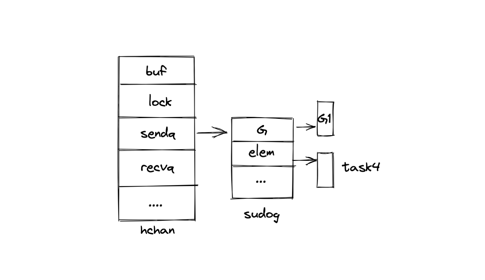

深入理解 channel
Go 在并发方面的表现很好，这也是 Go 的招牌。Go 在进行并发编程时，下面两个工具都会用到：
- goroutine：让多个任务并行，每个任务之间不相互影响
- channel：负责 goroutine 之间的通信
这篇文章会深入研究 channel 的工作机制，这里假设你已经了解 channel 的基本概念。对于 channel，我们需要知道它有如下的属性：
- 多个 goroutine 同时访问 channel 是安全的
- channel 中的任务是先进先出的（FIFO）
- channel 可以在 goroutine 之间传递值
- channel 会影响 goroutine 调度
下面来探究一下这些特性是怎么实现的。
1. 创建 channel
可以创建的 channel 有两种：
- buffered channel，在创建时候需要指定缓冲区的大小
- unbuffered channel，也被称之为同步 channel，这个可以看成是 buffered channel 的特殊情况，缓冲区的大小设置为 1
ch := make(chan int, 3) // 缓冲区大小为 3 的 buffered channel
ch := make(chan int) // unbuffered channel
chan 的底层数据结构叫 hchan，具体结构如下：
type hchan struct {
buf unsafe.Pointer
lock mutex
sendx uint
recvx uint
sendq waitq
recvq waitq
qcount uint
dataqsiz uint
elemsize uint16
closed uint32
elemtype *_type
}
其中 buf 是一个循环队列，用来存储 channel 接收的数据，lock 用来保护数据安全，goroutine 来访问 channel 的 buf 之前，需要先获取锁。
sendx 表示当前数据发送的的位置，recvx 表示当前数据接收的位置。sendq 和 recvq 是两个队列，这两个结构很重要，我们下面会讲到。
qcount 表示当前 buf 中存储的数据个数，dataqsiz 表示 buf 可以接受的最大数据数量。elemtype 就表示数据的类型。
channel 在使用 make 创建的时候，实际上会在堆上分配一块空间，初始化 hchan 结构，然后返回 hchan 的指针。这就是为什么在使用 channel 的时候，直接传递就可以，而不用获取 channel 的指针，这是因为 channel 本身就是指针。
2. 发送和接收
下面来详细看一下 channel 发送和接收数据的过程，现在假设有下面两个 goroutine: G1 和 G2，一个发送数据，一个接收数据：
// G1
func main() {
for _, task := range tasks {
taskCh <- task
}
}
// G2
func worker() {
for {
task := <- taskCh
process(task)
}
}
假设现在 G1 先执行，将数据发送到 channel中，会经过下面的三步：

在将数据放进 buf 之前，需要先获取锁，然后将数据拷贝一份放进去（注意这里是原数据的拷贝），然后再释放锁。
G2 运行后，发现 buf 中有数据，就可以处理，也需要经过三步：
首先也需要获取锁，然后把数据出队列，最后释放锁。
但是很显然，大多数情况下，数据的接受和发送不会这么顺利，假设现在 G2 对一个数据的处理花了很长的时间，而 G1 还在不断的发送数据：
这样 buf 很快就会被数据填满，那么这么时候 G1 就会被阻塞，直接 buf 中的数据被消耗，才会继续发送数据。
这里 goroutine 的阻塞和唤醒就是通过 Go 运行时的调度器来完成。这里有一个经常会被说到的概念：运行时。在这里可以简单的把运行时理解为 Go 代码运行的环境，运行时负责内存分配、垃圾回收等等。
goroutine 表示操作系统用户态的线程，相比于操作系统的线程，更轻量级，goroutine 之间的切换代价更小，但 goroutine 实际上还是在 操作系统线程上运行的。
这个运行时的调度器被称为 GMP 模型，其中 G 就表示 goroutine，M 表示操作系统的线程，P 表示调度器的上下文，维护了一个可执行 goroutine 的列表，负责 goroutine 的调度。
G1 发送任务被阻塞之后，P 就会将 G1 设置为等待状态，解除 G1 与 M 之间的关系，然后从队列中取出另外一个可运行的 goroutine 来运行。这里虽然 G1 被阻塞了，但是运行 G1 的线程并没有被阻塞，依然可以继续运行，对性能的影响会相对小。
G1 在被阻塞的时候会做一些事情，还记得上面 hchan 中 sendq 么，在这个时候就要起作用了。G1 会在被阻塞前创建一个 sudog 的数据，并把这个放进 sendq 中：

当 G2 消费一个数据之后，就会激活 sendq，将 sudog 中的 task4 直接入队到 buf 中，然后再将 G1 设置为可运行状态。
这里需要注意，是 G2 直接让 task4 进入到 buf 中，而不是先唤醒 G1，这样做是为了优化性能，如果先唤醒 G1，那么 G1 还需要先获取锁，然后才能将 task4 放入到 buf 中。
上面说的情况是 G1 做为数据发送方被阻塞，如果是数据接收方 G2 被阻塞会怎样？
G2 同样也会创建一个 sudog，但不是放进 sendq 中，而是放进 recvq 中：
这里 sudog 指向的是一个内存地址，用来接收 G1 发送进来的数据。在这里，最神奇的事情发生了，我们都知道 goroutine 是在栈上分配的，所以这里的 t 是在 G2 的栈上。
G1 发送数据的时候，会把数据直接写入到 t 所指向的内存地址，而不是放到 buf 中。也就是说 G1 直接向 G2 的栈上写入了数据。之所以这样做，也是从性能的角度考虑，这样 G2 就不用再去获取锁了。
这种一个栈向另一个栈写数据的情况只有这一种，在其他的地方不会出现。
3. 小结
通过上面我们知道，channel 通过 mutex（锁）来保证多个 goroutine 来访问 channel 的时候是安全的，同时 channel 维护了一个循环队列来保证数据的先进先出，同时也完成了在多个 goroutine 之间的数据传递，如果 goruotine 出现阻塞，则由调度器进行调度。
但是 channel 的实现也做出了一些非常规的操作，跨栈写数据，这样会给垃圾回收带来很大的麻烦。但如果不这么做，性能方面就会牺牲很多，所以这是一个性能和简单的一个妥协。
文 / Rayjun